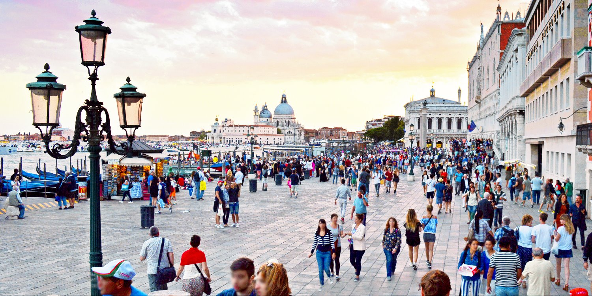

Overtoerisme
Een actueel woord dat al snel in verband met Venetië genoemd wordt is overtoerisme. Dit is de overtreffende trap van massatoerisme. Venetië is één van de plekken, net als Barcelona en Amsterdam, dat met dit verschijnsel te maken heeft. Het betekent eigenlijk dat er meer toerisme naar een plek komen dan dat de betreffende bestemming eigenlijk aankan. Denk daarbij onder andere aan de infrastructuur die zo zwaar belast wordt dat er eigenlijk een voor iedereen onaangename situatie ontstaat. Toeristen hebben te kampen met lange wachtrijen bij bezienswaardigheden, ondercapaciteit bij het openbaar vervoer en drukke straten en pleinen en straten waar je op de drukste momenten niet meer normaal kan lopen. Voor inwoners komt de leefbaarheid in het gedrang. In Venetië klagen de bewoners ook nog over het vrijwel continu aanwezige geluid van de zogenaamde rolkoffertjes.
Het is begrijpelijk dat zoveel mensen naar Venetië reizen. Deze plek is uniek op aarde door de vele kanalen en de Venetiaanse gondels. Tel daar de Italiaanse keuken en de historie van de voormalige Republiek Venetië bij op en je hebt wel een heel interessante bestemming te pakken. Wij zullen dan ook de laatste zijn die zeggen dat je niet naar Venetië met reizen. Wel vinden we dat we aan mogen geven dat je absoluut niet de enige toerist in Venetië zult zijn. Wees daar op voorbereid. Wat scheelt is als je je stedentrip naar Venetië in de wintermaanden plant. Met uitzondering van de carnavalsperiode is het dan rustiger in de straten en op de kanalen van Venetië. Met name in de maanden november en maart merk je dat deze bijzondere bestemming weer wat meer als een echte stad aanvoelt dan als een groot overbevolkt openluchtmuseum.